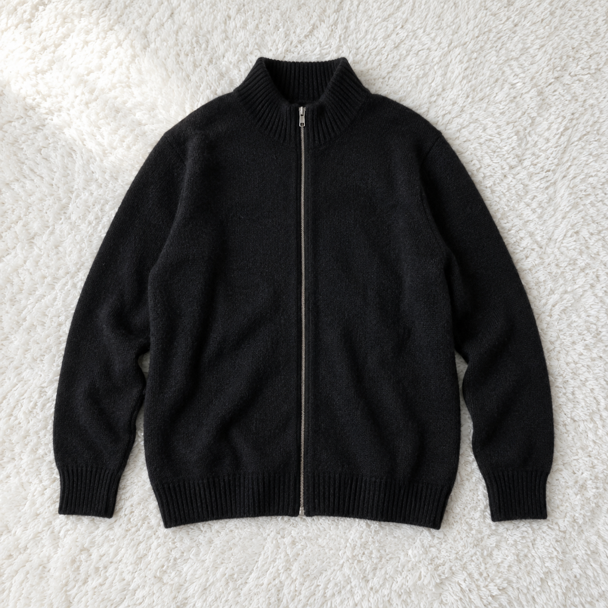
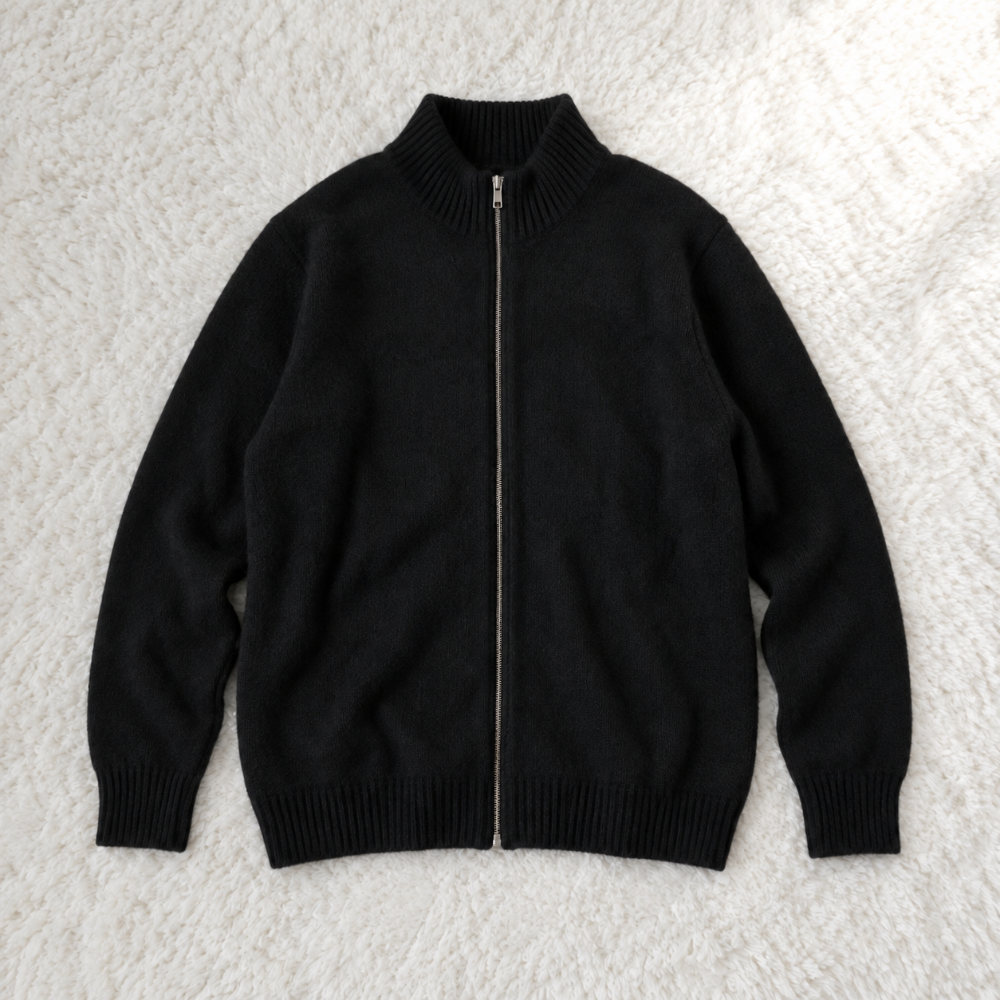
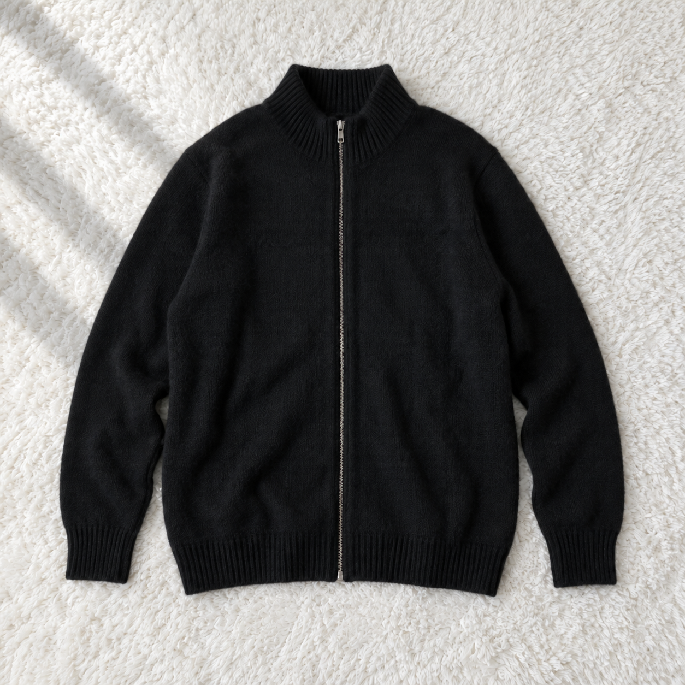
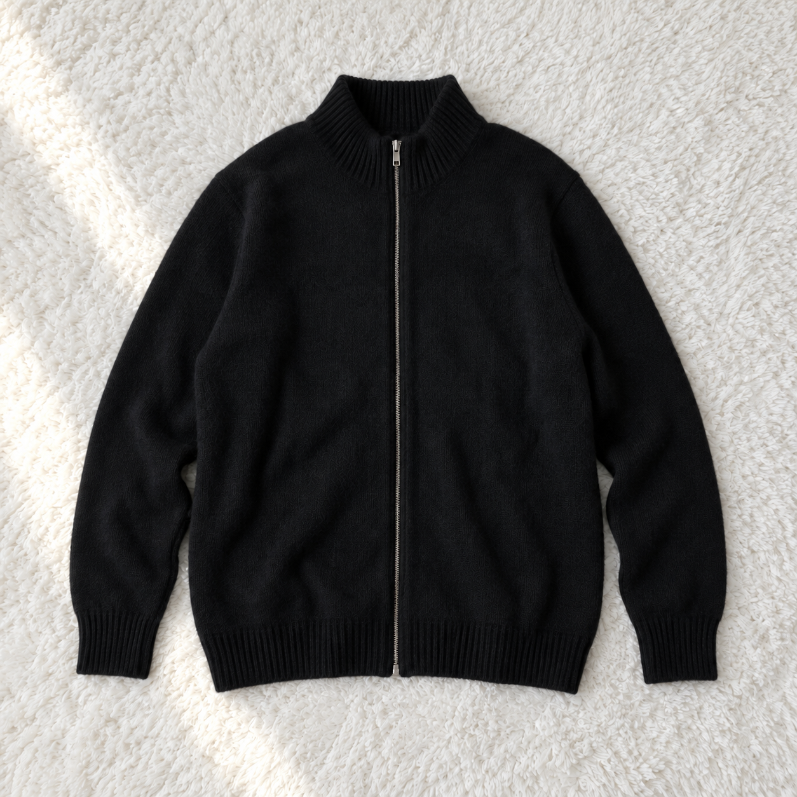
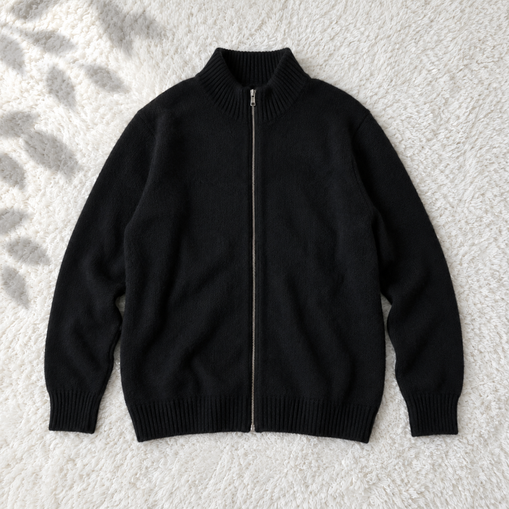

01
左上から、ふんわりと。
柔らかい斜め光

光の演出を最も控えめにした案です。普段の写真との違いを小さくしたいときに。
画像を大きく見るPHOTO LIGHTING / 5 IDEAS
平置きのまま、光の入り方を比べる5案。
比較用の生成画像です。実商品の写真ではありません。
左上から、ふんわりと。

光の演出を最も控えめにした案です。普段の写真との違いを小さくしたいときに。
画像を大きく見る右上から、明るさを広く。

カーペットに緩やかな明るさの差を付け、窓のそばで撮った雰囲気に。
画像を大きく見る左上に、柔らかな陰影。

背景の端に淡い影を加えた案です。光が差し込む雰囲気を少し強めています。
画像を大きく見るカーペットに、一筋の光。

左側に細い斜めの光を入れた案です。白い背景のまま、日差しを感じられます。
画像を大きく見る左上に、淡い葉の影。

植物そのものは置かず、カーペットの端にだけ木漏れ日の雰囲気を加えています。
画像を大きく見る